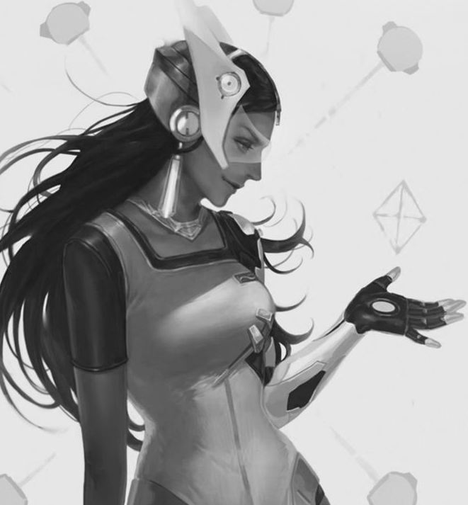

Статус: Архитектор корпорации Вишкар
Вселенная: Overwatch
Способности: Использование фотонного излучателя для создания цитов и мини-турелей
"Хаос - вот истинный враг человечества"
Один из ведущих архитекторов корпорации Вишкар. Юную Сатью Вашвани отобрали как одного из немногих архитекторов, способных работать с «жестким» светом, вырвав девушку из пут ужасающей нищеты и поместив под крыло архитектурной академии. Ей не было суждено вернуться домой. Она быстро схватывала практические способы применения технологии и была одним из лучших учеников своего курса. Хотя Сатья была одним из ведущих архитекторов Утопии, корпорация Vishkar видела в ней гораздо больший потенциал.
Ей дали имя Симметра и стали посылать в разные уголки мира на тайные задания, целями которых были защита интересов корпорации и распространение ее влияния на другие страны. Симметра искренне верит в то, что ее действия идут на благо обществу, но иногда ее одолевают сомнения в том, что контроль и порядок, которых она жаждет, — это действительно хорошо.
ДОСЬЕ ПЕРСОНАЖА
